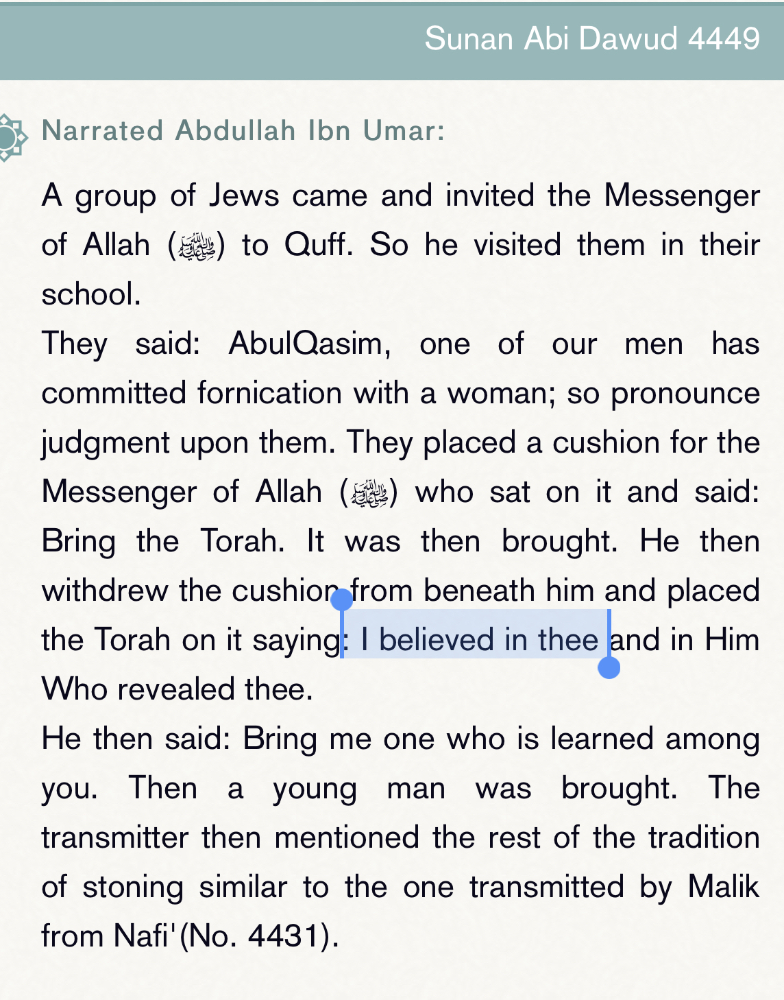
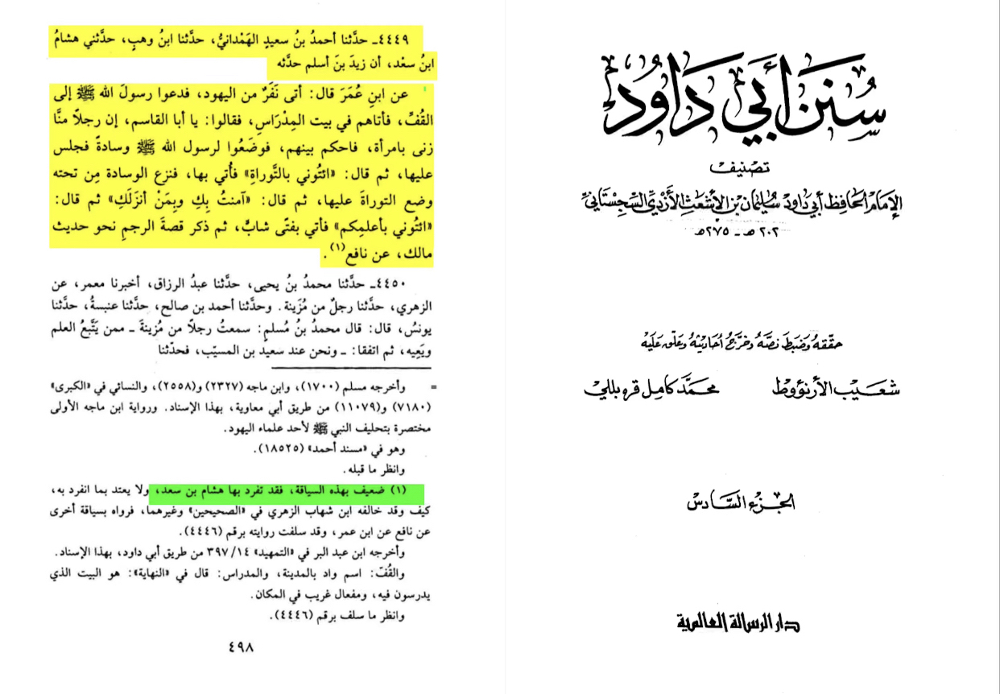
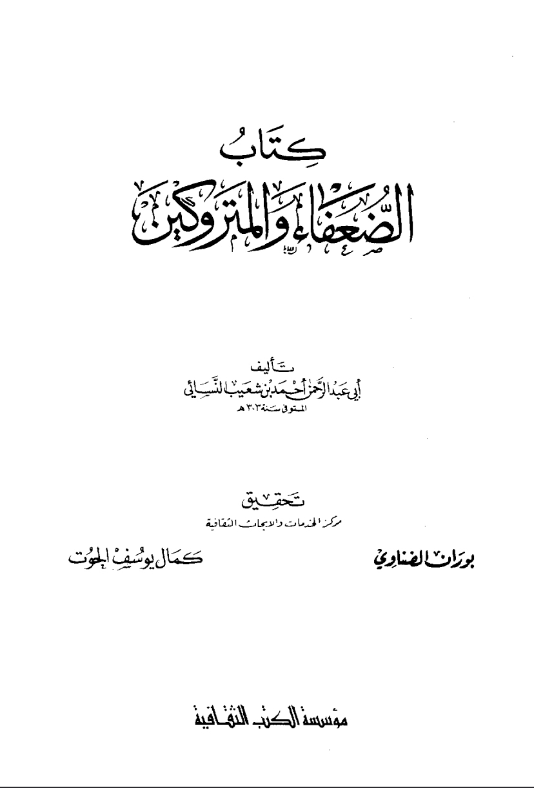
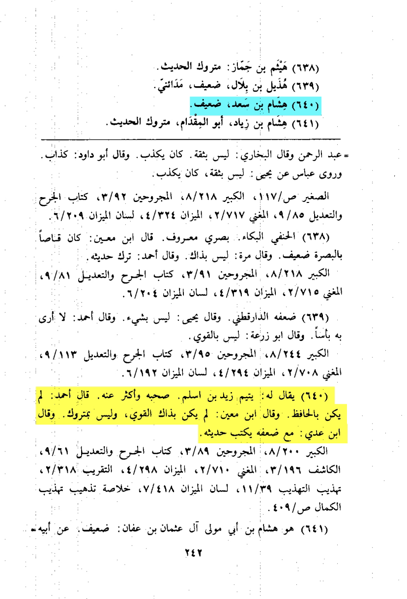
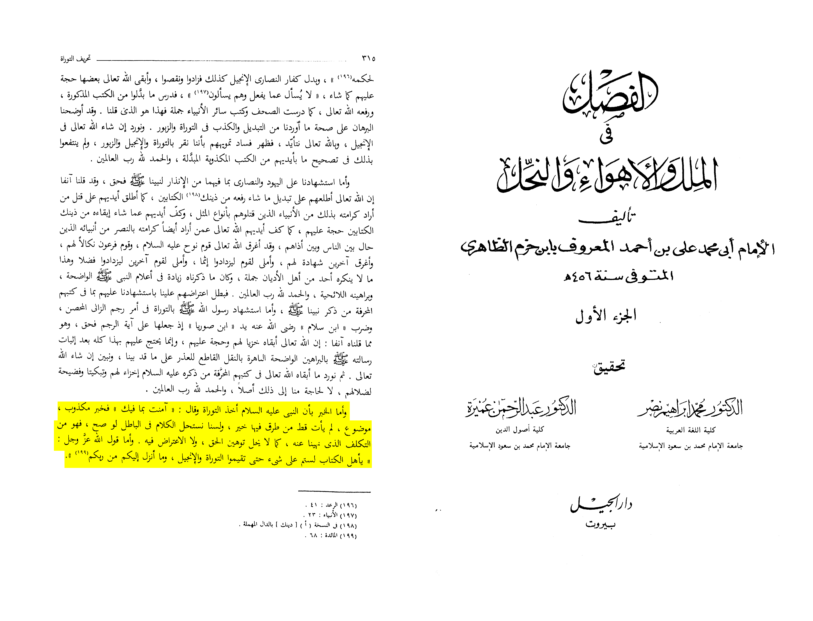

1. Hisham bin Sa'd weakened by:
[Hibban, Nasai Ibn Hanbal, al Asqalani]
2. Ahmad bin Sa'eed weakened by: [Ibn Hanbal al Jawzi Al Nasai Daraqutni]
3, it goes against the Quran and much more sahih Hadiths. 🔽
Here al-arna’ut in his tahquiq weakns the report



Hisham bin Sa'd هِشَامُ بْنُ سَعْدٍ was weakened by Nasai in here
Ibn hazm said: it is a fabricated false report that did not reach us with proper chain of transmission.
